Support Vector Machines¶
This software accompanies the paper Support vector machine training
using matrix completion techniques by
Martin Andersen and Lieven Vandenberghe. The code can be downloaded as
a zip file and
requires the Python extensions CVXOPT and CHOMPACK 2.3.1 or later.
Feedback and bug reports
We welcome feedback, and bug reports are much appreciated. Please email bug reports to martin.skovgaard.andersen@gmail.com.
Overview¶
This software provides two routines for soft-margin support vector machine training. Both routines use the CVXOPT QP solver which implements an interior-point method.
The routine softmargin() solves the standard SVM QP. It computes
and stores the entire kernel matrix, and hence it is only suited for
small problems.
The routine softmargin_appr() solves an approximate problem in
which the (generally dense) kernel matrix is replaced by a positive
definite approximation (the maximum determinant positive definite
completion of a partially specified kernel matrix) whose inverse is
sparse. This can be exploited in interior-point methods, and the
technique is implemented as a custom KKT solver for the CVXOPT QP
solver. As a consequence, softmargin_appr() can handle much
larger problems than softmargin().
Documentation¶
-
softmargin(X, d, gamma, kernel = 'linear', sigma = 1.0, degree = 1, theta = 1.0)¶ Solves the ‘soft-margin’ SVM problem
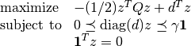
(with variables
 ), and its dual problem
), and its dual problem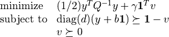
(with variables
 ,
,  ,
,  ).
).The kernel matrix
 is given by
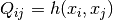 where
is given by
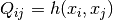 where  is a kernel function
and
is a kernel function
and  is the i’th row of the data
matrix
is the i’th row of the data
matrix  , and
, and  is an
is an  -vector with labels
(i.e. 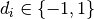). If is singular, we
replace
-vector with labels
(i.e. 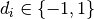). If is singular, we
replace  in the dual with its pseudo-inverse and add
a constraint 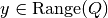.
in the dual with its pseudo-inverse and add
a constraint 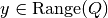.Valid kernel functions are:
'linear'- the linear kernel: 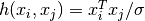
'poly'- the polynomial kernel: 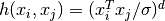
'rbf'- the radial basis function: 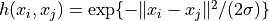
'tanh'- the sigmoid kernel:
The kernel parameters
 , , and
, , and  are specified using the input arguments sigma, degree, and theta,
respectively.
are specified using the input arguments sigma, degree, and theta,
respectively.softmargin()returns a dictionary with the following keys:'classifier'- a Python function object that takes an 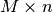 matrix with test vectors as rows and returns a vector with labels
'z'- a sparse -vector
'cputime'- a tuple (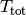,
 ,
,
 ) where is the
total CPU time, is the CPU time spent
solving the QP, and is the CPU time spent
computing the kernel matrix
) where is the
total CPU time, is the CPU time spent
solving the QP, and is the CPU time spent
computing the kernel matrix 'iterations'- the number of interior point iterations
'misclassified'- a tuple (L1, L2) where L1 is a list of indices of misclassified training vectors from class 1, and L2 is a list of indices of misclassified training vectors from class 2
-
softmargin_appr(X, d, gamma, width, kernel = 'linear', sigma = 1.0, degree = 1, theta = 1.0)¶ Solves the ‘soft-margin’ SVM problem
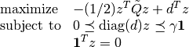
(with variables
), and its dual problem(with variables
, , ).The kernel matrix is the maximum determinant completion of the projection of Q on a band with bandwidth 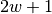. Here where
is one of the kernel functions defined under
softmargin()and is the i’th row of the
data matrix . The -vector
is a vector with labels (i.e.  ). The half-bandwidth parameter
). The half-bandwidth parameter  is set using the
input argument width.
is set using the
input argument width.softmaring_appr()returns a dictionary that contains the same keys as the dictionary returned bysoftmargin(). In addition to these keys, the dictionary returned bysoftmargin_appr()contains an second classifier:'completion classifier'- a Python function object that takes an matrix with test vectors as rows and returns a vector with labels
Example 1¶
As a toy example, consider the following classification problem with
two (nonlinearly) separable classes. We use as training set
points in  generated according to a uniform
distribution over the box 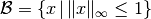. We assign labels using the function
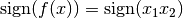, i.e., points
in the first and third quadrants belong to class 1 and points in the
second and fourth quadrants belong to class 2. We remark that in this
simple example, the degree 2 polynomial kernel can separate the two
classes.
generated according to a uniform
distribution over the box 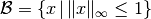. We assign labels using the function
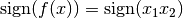, i.e., points
in the first and third quadrants belong to class 1 and points in the
second and fourth quadrants belong to class 2. We remark that in this
simple example, the degree 2 polynomial kernel can separate the two
classes.
The following Python code illustrates how to solve this classification
problem using each of the two routines provided in SVMCMPL. In this
example we solve a problem instance with 2,000 training
points, and we use  and the RBF kernel with
.
and the RBF kernel with
.
import cvxopt, svmcmpl
m = 2000
X = 2.0*cvxopt.uniform(m,2)-1.0
d = cvxopt.matrix([2*int(v>=0)-1 for v in cvxopt.mul(X[:,0],X[:,1])],(m,1))
gamma = 2.0; kernel = 'rbf'; sigma = 1.0; width = 20
sol1 = svmcmpl.softmargin(X, d, gamma, kernel, sigma)
sol2 = svmcmpl.softmargin_appr(X, d, gamma, width, kernel, sigma)
Solving the standard (dense) SVM problem produced 445 support vectors, marked with white dots in the plot below:

The solid curve marks the decision boundry whereas the dashed curves
are the -1 and +1 contours of 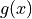 where
 is the decision function.
is the decision function.
Solving the approximation problem with half-bandwidth 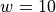 produced 1,054 support vectors.


In this example, the standard kernel classifier is clearly better than
the completion kernel classifier at this bandwidth. Increasing the
half-bandwidth to  produced 467 support vectors.
produced 467 support vectors.


Notice that both the standard kernel and completion kernel classifiers are now nearly identical to classifier obtained by solving the standard SVM QP.
Solving the dense SVM QP required 7.0 seconds whereas the approximation QPs required 0.3 seconds and 0.7 seconds for and 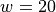, respectively.
Example 2¶
The following example demonstrates the approximate SVM method on the
MNIST database of handwritten
digits. In the example we use the Python module mnist.py to read the database files. The following code trains
a binary classifier using as training set 4,000 examples of the digit
‘0’ as class 1 and 4,000 examples of the digit ‘1’ as class 2.
import mnist, svmcmpl, cvxopt, random
digits1 = [ 0 ]
digits2 = [ 1 ]
m1 = 4000; m2 = 4000
# read training data
images, labels = mnist.read(digits1 + digits2, dataset = "training", path = "data/mnist")
images = images / 256.
C1 = [ k for k in xrange(len(labels)) if labels[k] in digits1 ]
C2 = [ k for k in xrange(len(labels)) if labels[k] in digits2 ]
random.seed()
random.shuffle(C1)
random.shuffle(C2)
train = C1[:m1] + C2[:m2]
random.shuffle(train)
X = images[train,:]
d = cvxopt.matrix([ 2*(k in digits1) - 1 for k in labels[train] ])
gamma = 4.0
sol = svmcmpl.softmargin_appr(X, d, gamma, width = 50, kernel = 'rbf', sigma = 2**5)
In this example, both the standard kernel classifier and the completion kernel classifier misclassified 8 out of 2,115 test examples (digits ‘0’ and ‘1’ from the MNIST test set):